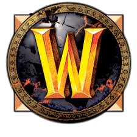
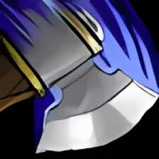

Arms Haven
Welcome to Cataclysm Classic, Warrior
What's different about this from other websites?
Sourcing, sourcing, and more sourcing...
The search for information generally follows these steps:
- Find a website
- Fact check this against other websites
- Hope there's some sort of information consistency
The key to ensuring the accuracy and reliability of information found online is thorough sourcing and verification. By cross-referencing information from multiple credible sources, you can better determine the validity of the content you encounter on the internet.
Spoiler alert
There is no consistency in the information, there is no sourcing, and most importantly there is no accountability.
Our Mission Statement
This website is simply a passion project. I have loved the warrior class fantasy my entire life. Most Cataclysm websites seem to have spotty information at best, thus Arms Haven was born!
I want this to be your one stop shop for all things Arms Warrior. I will spend countless hours rummaging through the outdated websites of 2010 and onward, to provide you with the information you deserve.
We don't need logins, we don't need hundreds of pages to dig through, we need information that's appropriately sourced and quick to access.
Simple and clean, nothing more, nothing less.